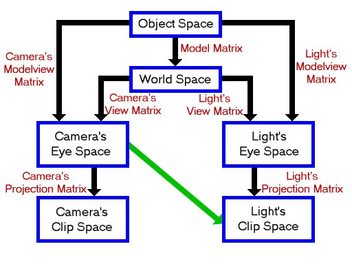
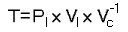

Shadow Mapping
Shadow mapping was introduced by Lance Williams in 1978, in a paper entitled "Casting curved shadows on curved surfaces". It has been extensively used since, both in offline rendering and real time graphics. Shadow mapping is used by Pixar's Renderman and was used on major films such as "Toy Story".
Shadow mapping is just one of many different ways of producing shadows in your graphics applications, each with its own advantages and disadvantages. In the case of shadow mapping, these include:
Advantages:
- No knowledge or processing of the scene geometry is required, since shadow mapping is an image space technique, working automatically with objects created or altered on the GPU.
- Only a single texture is required to hold shadowing information for each light; the stencil buffer is not used.
- Avoids the high fill requirement of shadow volumes.
Disadvantages:
- Aliasing, especially when using small shadow maps.
- The scene geometry must be rendered once per light in order to generate the shadow map for a spotlight, and more times for an omnidirectional point light.
This tutorial will focus on basic shadow mapping for a single spotlight, but there are plenty of papers about how to extend and improve the technique.
Theory - Shadow mapping as a depth test
Consider a simple scene lit by a single point light, with hard shadows. How does a given point in the scene know whether it is lit, or in shadow? Put simply, a point in the scene is lit if there is nothing blocking a straight line path between the light and that point. The key step in understanding shadow mapping is that these points are exactly those which would be visible (i.e. not occluded) to a viewer placed at the light source.
We already have a technique to see what is visible to a given viewer, and use it when drawing almost any scene using 3d hardware. That technique is z-buffering. So, the points which would pass the depth test if we were rendering the scene from the light's point of view are precisely those which should not be in shadow.
If we draw the scene from the light's point of view, we can save the values from the depth buffer. Then, we draw the scene from the camera's point of view, and use the saved depth buffer as a texture which is projected from the light's position. At a given point, we can then compare the value from the texture projected onto the point to the distance from the point to the light, and hence calculate which points should be in shadow.
Letting the value in the saved depth texture be D, and the distance from the point to the light be R, we have:
| R = D | There was nothing occluding this point when drawing from the light source, so this point is unshadowed. |
| R > D | There must have been an object in front of this point when looking from the light's position. This point is thus in shadow. |
Application
How do we go about performing the above using OpenGL?
The technique requires at least 2 passes, but to keep each pass simple, we will use 3.
Firstly, we draw the scene from the light's point of view. This is acheived by using gluLookAt to look from the light's position at the centre of the scene. The scene is then drawn as normal, and the depth buffer read.
All the calculations for the shadowing are performed at the precision of the depth buffer. Using an equality to test for an unshadowed point is likely to produce many incorrect results, due to a lack of precision. This is the same reason as that behind "Do not compare floats with ==". So, when drawing the scene from the light's point of view, we instruct OpenGL to cull front faces. Thus the back faces of our objects are drawn into the shadow map. Hence the depth values stored in the shadow map are greater than the depth of the faces which can be seen by the light. By marking as unshadowed points for which D >= R, all surfaces visible to the light will be unshadowed. There will now be a precision problem with the back faces (with respect to the light), but since these are shadowed by definition, the result of the comparison does not matter.
This technique will only work if all objects are closed. If you have open objects in your scene, it is possible instead to use polygon offset to increase the depth values stored in the depth buffer.
For simplicity, we will draw this first pass to the standard back buffer. This means that our window must be large enough to fit the shadow map texture within it, and the window must not be occluded by others. These restrictions can be bypassed by using an off-screen pbuffer when generating the shadow map.
The other two passes are drawn from the camera's point of view. Firstly, we draw the entire scene with a dim light, as it would be shown if shadowed. In theory, this pass should draw the scene using only ambient light. However, in order that the curved surfaces in shadow do not appear unnaturally flat, we use a dim diffuse light source.
The third pass is where the shadow comparison mentioned above occurs. This comparison is so vital to shadow mapping, it is actually possible to get the hardware to perform the comparison per pixel, using the ARB approved extension, ARB_shadow. We set up the texture unit so that the comparison will affect the alpha value as well as the color components. Any fragments which "fail" the comparison (R > D) will generate an alpha value of 0, and any which pass will have alpha of 1. By using the alpha test, we can discard any fragments which should be shadowed. Now, using a bright light with specular enabled we can draw the lit parts of the scene.
Using a linear filter on the depth texture will filter the values produced after the shadow comparison. This is called "Percentage Closer Filtering" (or PCF) and will produce slightly soft shadow edges. If we allow the lower alpha values to pass the alpha test however, the lit fragments, modulated by the shadow map, may actually be darker than the shadowed pixel already within the framebuffer. This produces a dark border around the shadowed regions. So, in this demo, the alpha test is used to discard all but fully lit regions. The dark border could be eliminated by using a different, more complicated method to combine the 2 passes. In my main shadow mapping project, MAX blending is used to combine the results. However, to keep this tutorial as simple as possible, PCF has not been used.
Projective texturing
How do we project the light's depth buffer, encoded in a texture, onto the scene's geometry when rendered from the camera's point of view?
Firstly, let's look at the coordinate spaces and matrices involved in this demo:
The shadow map is a snapshot of the light's viewport, which is a 2d projection of the light's clip space. In order to perform the texture projection, we will use OpenGL's EYE_LINEAR texture coordinate generation, which generates texture coordinates for a vertex based upon its eye-space position. We need to map these generated texture coordinates to ones appropriate for addressing the shadow map, using the texture matrix. The texture matrix thus needs to perform the operation symbolised by the green arrow above.
The best way to do this is to use:
where:
| T | is the texture matrix |
| Pl | is the light's projection matrix |
| Vl | is the light's view matrix |
| Vc | is the camera's view matrix |
Remembering that OpenGL applies a matrix M to a texture coordinate set T as MT, this will transform the camera's eye space coordinates into the light's clip space by going through world space and the light's eye space. This avoids object space and the use of any model matrices, and hence does not need to be recalculated for each model we are drawing.
There is one final operation which needs to be performed on the texture coordinates once they are in the light's clip space. After the perspective divide, the clip space X, Y and Z coordinates are in the range -1 to 1 (written [-1, 1]). The texture map is addressed by X and Y coordinates in [0, 1], and the depth value stored in it is also in [0, 1]. We need to generate a simple matrix to map [-1, 1] to [0, 1] for each of X, Y and Z coordinates, and pre-multiply our texture matrix T by it.
We can actually perform this projection avoiding use of the texture matrix altogether. This can be acheived as we actually specify a matrix when we enable EYE_LINEAR texgen. Typical code to enable the texture coordinate generation for a single coordinate is:
glTexGeni(GL_S, GL_TEXTURE_GEN_MODE, GL_EYE_LINEAR);
glTexGenfv(GL_S, GL_EYE_PLANE, VECTOR4D(1.0f, 0.0f, 0.0f, 0.0f));
glEnable(GL_TEXTURE_GEN_S);
If we look at the eye planes for all four texture coordinates together, they form the 4x4 identity matrix. Texture coordinates are generated based upon this "texgen" matrix, and are then manipulated using the texture matrix. We can gain a small speed-up by ignoring the texture matrix and placing what we would use for the texture matrix directly into the eye planes.
Finally, the most expensive part of setting up the projection is calculating the inverse of Vc. OpenGL will even do that for us! When the eye planes are specified, the GL will automatically post-multiply them with the inverse of the current modelview matrix. All we have to do is ensure that at this time, the modelview matrix contains the camera's view matrix. The inverse of this will then be multiplied onto our texgen matrix.
So, the final code to set up the texture projection, including these optimisations, is:
//Calculate texture matrix for projection
//This matrix takes us from eye space to the light's clip space
//It is postmultiplied by the inverse of the current view matrix when specifying texgen
static MATRIX4X4 biasMatrix
(0.5f, 0.0f, 0.0f, 0.0f,
0.0f, 0.5f, 0.0f, 0.0f,
0.0f, 0.0f, 0.5f, 0.0f,
0.5f, 0.5f, 0.5f, 1.0f);
MATRIX4X4 textureMatrix=biasMatrix*lightProjectionMatrix*lightViewMatrix;
//Set up texture coordinate generation.
glTexGeni(GL_S, GL_TEXTURE_GEN_MODE, GL_EYE_LINEAR);
glTexGenfv(GL_S, GL_EYE_PLANE, textureMatrix.GetRow(0));
glEnable(GL_TEXTURE_GEN_S);
glTexGeni(GL_T, GL_TEXTURE_GEN_MODE, GL_EYE_LINEAR);
glTexGenfv(GL_T, GL_EYE_PLANE, textureMatrix.GetRow(1));
glEnable(GL_TEXTURE_GEN_T);
glTexGeni(GL_R, GL_TEXTURE_GEN_MODE, GL_EYE_LINEAR);
glTexGenfv(GL_R, GL_EYE_PLANE, textureMatrix.GetRow(2));
glEnable(GL_TEXTURE_GEN_R);
glTexGeni(GL_Q, GL_TEXTURE_GEN_MODE, GL_EYE_LINEAR);
glTexGenfv(GL_Q, GL_EYE_PLANE, textureMatrix.GetRow(3));
glEnable(GL_TEXTURE_GEN_Q);
Extensions used
The only two extensions we will use in this project are ARB_depth_texture and ARB_shadow.
ARB_depth_texture provides a new texture format to hold the depth buffer. By using DEPTH_COMPONENT as both the format and internal format of a texture, we get a single-channel texture of the same precision as the depth buffer. For example, if we have a 24 bit depth buffer, a DEPTH_COMPONENT texture will have a single 24 bit channel, perfect for storing values read from the depth buffer.
As with RGB textures, we can use CopyTex[Sub]Image2D to copy data from the framebuffer into the texture. When we are using a depth texture, this information will automatically be copied from the depth buffer rather than the color buffer. This card-local copy saves us from having to read the depth buffer into system memory and then save this as a texture.
ARB_shadow provides the automatic shadow comparison mentioned above.
Rather than write possibly large amounts of code to create and initialise function pointers for the extensions, we will use the extension loading library "GLee", by Ben Woodhouse. This will do the work for us, and can be downloaded from http://elf-stone.com/glee.php. The latest version is also included in the source download at the end of this tutorial.
Code
The amount of code required for this tutorial is actually quite small. The reasons for this are primarily:
-
There is no need to manually generate any specific geometry, since the shadow mapping algorithm does not require silhouette edge determination or any additional vertex properties such as tangent vectors.
All geometry can be drawn using glutSolidSphere and similar commands. -
The majority of the work required is done in hardware.
The shadow mapping comparison needs only a few lines to enable it, then it will be performed automatically.
In my OpenGL Shadow Mapping demo on the projects page, shadow mapping at 8 bit precision is done "manually" for hardware which does not support the ARB_shadow extension. This requires quite a lot more work. The 8 bit precision also means that many artifacts can appear on all but the smallest spotlight frusta. Now that hardware shadow mapping support is relatively widely available, with its ease of use and high precision, there is very little call for the manual approach.
Since the code for shadow mapping is quite concise, I have included a couple of simple classes from my usual OpenGL projects. The TIMER class implements a simple timer using timeGetTime. The timer can be paused and unpaused, and simply returns the number of milliseconds since it was last reset. We use this to animate the scene at a constant speed, independent of the frame rate.
The FPS_COUNTER class implements a simple frames per second counter so you can see how well the demo code is running. Each frame, this counter is internally incremented, and each second the number of frames displayed is updated.
The DrawScene function, found in scene.cpp, draws the scene which we want to display. It takes a floating point angle as a parameter, which is used to rotate the spheres.
void DrawScene(float angle)
{
First we create 3 unsigned integers to hold the identifiers for the display lists. One display list is used for each part of the scene. Since the variables are declared static, they will retain their value between calls to the function.
//Display lists for objects
static GLuint spheresList=0, torusList=0, baseList=0;
If the variable "spheresList" is zero, we use glGenLists to save a new display list identifier into spheresList. This will be non-zero. Hence the code between the braces is executed only on the first call of this function. This fills the display list with the OpenGL commands to generate 4 spheres.
//Create spheres list if necessary
if(!spheresList)
{
spheresList=glGenLists(1);
glNewList(spheresList, GL_COMPILE);
{
glColor3f(0.0f, 1.0f, 0.0f);
glPushMatrix();
glTranslatef(0.45f, 1.0f, 0.45f);
glutSolidSphere(0.2, 24, 24);
glTranslatef(-0.9f, 0.0f, 0.0f);
glutSolidSphere(0.2, 24, 24);
glTranslatef(0.0f, 0.0f,-0.9f);
glutSolidSphere(0.2, 24, 24);
glTranslatef(0.9f, 0.0f, 0.0f);
glutSolidSphere(0.2, 24, 24);
glPopMatrix();
}
glEndList();
}
We similarly generate a display list for a torus and a flat base.
//Create torus if necessary
if(!torusList)
{
torusList=glGenLists(1);
glNewList(torusList, GL_COMPILE);
{
glColor3f(1.0f, 0.0f, 0.0f);
glPushMatrix();
glTranslatef(0.0f, 0.5f, 0.0f);
glRotatef(90.0f, 1.0f, 0.0f, 0.0f);
glutSolidTorus(0.2, 0.5, 24, 48);
glPopMatrix();
}
glEndList();
}
//Create base if necessary
if(!baseList)
{
baseList=glGenLists(1);
glNewList(baseList, GL_COMPILE);
{
glColor3f(0.0f, 0.0f, 1.0f);
glPushMatrix();
glScalef(1.0f, 0.05f, 1.0f);
glutSolidCube(3.0f);
glPopMatrix();
}
glEndList();
}
Now we draw the scene by calling the display lists, rotating the spheres by "angle". Each time after the first that this function is called, this is the only part which will be executed.
//Draw objects
glCallList(baseList);
glCallList(torusList);
glPushMatrix();
glRotatef(angle, 0.0f, 1.0f, 0.0f);
glCallList(spheresList);
glPopMatrix();
}
Now let's look at the main source file, where all of the interesting code lives.
First up is to include the necessary headers, including "GLee.h", the header for the extension loading library.
#define WIN32_LEAN_AND_MEAN
#include <windows.h>
#include <stdio.h>
#include "GLee/GLee.h" //GL header file, including extensions
#include <GL/glut.h>
#include "Maths/Maths.h"
#include "TIMER.h"
#include "FPS_COUNTER.h"
#include "scene.h"
#include "main.h"
Now create our global objects, the timer and frames per second counter.
//Timer used for frame rate independent movement
TIMER timer;
//Frames per second counter
FPS_COUNTER fpsCounter;
Now we create a few global variables. The camera and light positions are fixed at the values given here. We also fix the shadow map size at 512x512 and create space to hold the shadow map texture identifier. We also create space to hold the projection and view matrices for the camera and for the light.
//Camera & light positions
VECTOR3D cameraPosition(-2.5f, 3.5f,-2.5f);
VECTOR3D lightPosition(2.0f, 3.0f,-2.0f);
//Size of shadow map
const int shadowMapSize=512;
//Textures
GLuint shadowMapTexture;
//window size
int windowWidth, windowHeight;
//Matrices
MATRIX4X4 lightProjectionMatrix, lightViewMatrix;
MATRIX4X4 cameraProjectionMatrix, cameraViewMatrix;
The "Init" function is called to initialise the demo.
//Called for initiation
bool Init(void)
{
First we use the GLee library to check that the ARB_depth_texture and ARB_shadow extensions are supported.
//Check for necessary extensions
if(!GLEE_ARB_depth_texture || !GLEE_ARB_shadow)
{
printf("I require ARB_depth_texture and ARB_shadow extensionsn\n");
return false;
}
Now we set the initial states for the modelview matrix, shading and depth testing. We also enable back-face culling for a small speed boost, and since we use glScale when drawing the scene, we enable GL_NORMALIZE.
//Load identity modelview
glMatrixMode(GL_MODELVIEW);
glLoadIdentity();
//Shading states
glShadeModel(GL_SMOOTH);
glClearColor(0.0f, 0.0f, 0.0f, 0.0f);
glColor4f(1.0f, 1.0f, 1.0f, 1.0f);
glHint(GL_PERSPECTIVE_CORRECTION_HINT, GL_NICEST);
//Depth states
glClearDepth(1.0f);
glDepthFunc(GL_LEQUAL);
glEnable(GL_DEPTH_TEST);
glEnable(GL_CULL_FACE);
//We use glScale when drawing the scene
glEnable(GL_NORMALIZE);
The next step is to create the shadow map texture. It is a square texture of size shadowMapSize, and has a format of "DEPTH_COMPONENT". We do not want to initialise the texture data with anything, so we set the pixels pointer to NULL.
//Create the shadow map texture
glGenTextures(1, &shadowMapTexture);
glBindTexture(GL_TEXTURE_2D, shadowMapTexture);
glTexImage2D( GL_TEXTURE_2D, 0, GL_DEPTH_COMPONENT, shadowMapSize, shadowMapSize, 0,
GL_DEPTH_COMPONENT, GL_UNSIGNED_BYTE, NULL);
glTexParameteri(GL_TEXTURE_2D, GL_TEXTURE_MIN_FILTER, GL_NEAREST);
glTexParameteri(GL_TEXTURE_2D, GL_TEXTURE_MAG_FILTER, GL_NEAREST);
glTexParameteri(GL_TEXTURE_2D, GL_TEXTURE_WRAP_S, GL_CLAMP);
glTexParameteri(GL_TEXTURE_2D, GL_TEXTURE_WRAP_T, GL_CLAMP);
We want an easy way to change the diffuse and ambient material color of the objects in the scene, so we use glColorMaterial so that changing the color will change this material.
We fix all surfaces to have a white specular reflectance color and a specular exponent of 16.
//Use the color as the ambient and diffuse material
glColorMaterial(GL_FRONT, GL_AMBIENT_AND_DIFFUSE);
glEnable(GL_COLOR_MATERIAL);
//White specular material color, shininess 16
glMaterialfv(GL_FRONT, GL_SPECULAR, white);
glMaterialf(GL_FRONT, GL_SHININESS, 16.0f);
The matrices for the camera and the light are set up here and saved into the global variables.
Firstly, we save the current modelview matrix. Then, for each matrix we want to set up, we firstly load identity, then call the relevant OpenGL functions to create the matrix on the modelview stack. This is then read back into the global matrix variable. Finally, the modelview matrix is restored.
Note that we are creating all matrices, including the projection ones, on the modelview stack. This is why GetFloatv always reads the modelview matrix.
The light and camera have differenct projection matrices.
In order to make the most of the precision we have available, the light's near and far planes are placed as close together as possible. Also, the light has an aspect ratio of 1, so its frustum is a truncated square pyramid.
//Calculate & save matrices
glPushMatrix();
glLoadIdentity();
gluPerspective(45.0f, (float)windowWidth/windowHeight, 1.0f, 100.0f);
glGetFloatv(GL_MODELVIEW_MATRIX, cameraProjectionMatrix);
glLoadIdentity();
gluLookAt(cameraPosition.x, cameraPosition.y, cameraPosition.z,
0.0f, 0.0f, 0.0f,
0.0f, 1.0f, 0.0f);
glGetFloatv(GL_MODELVIEW_MATRIX, cameraViewMatrix);
glLoadIdentity();
gluPerspective(45.0f, 1.0f, 2.0f, 8.0f);
glGetFloatv(GL_MODELVIEW_MATRIX, lightProjectionMatrix);
glLoadIdentity();
gluLookAt( lightPosition.x, lightPosition.y, lightPosition.z,
0.0f, 0.0f, 0.0f,
0.0f, 1.0f, 0.0f);
glGetFloatv(GL_MODELVIEW_MATRIX, lightViewMatrix);
glPopMatrix();
Finally, we reset the timer and return true.
//Reset timer
timer.Reset();
return true;
}
Display is called to draw a frame.
//Called to draw scene
void Display(void)
{
First we calculate the angle of the spheres. By using the timer, the rate of rotation will be independent of the frame rate.
//angle of spheres in scene. Calculate from time
float angle=timer.GetTime()/10;
For the first pass, we draw the scene from the light's point of view. Clear the color and depth buffers and set the matrices to those for the light. Use a viewport of the same size as the shadow map.
//First pass - from light's point of view
glClear(GL_COLOR_BUFFER_BIT | GL_DEPTH_BUFFER_BIT);
glMatrixMode(GL_PROJECTION);
glLoadMatrixf(lightProjectionMatrix);
glMatrixMode(GL_MODELVIEW);
glLoadMatrixf(lightViewMatrix);
//Use viewport the same size as the shadow map
glViewport(0, 0, shadowMapSize, shadowMapSize);
Here we instruct OpenGL to cull front faces, so the back faces are drawn into the shadow map. This deals with the issue of finite precision as explained above. We also disable color writes and use flat shading, since we are only interested in the contents of the depth buffer.
//Draw back faces into the shadow map
glCullFace(GL_FRONT);
//Disable color writes, and use flat shading for speed
glShadeModel(GL_FLAT);
glColorMask(0, 0, 0, 0);
We are now ready to draw the scene.
//Draw the scene
DrawScene(angle);
CopyTexSubImage2D is used to copy the contents of the frame buffer into a texture. First we bind the shadow map texture, then copy the viewport into the texture. Since we have bound a DEPTH_COMPONENT texture, the data read will automatically come from the depth buffer.
//Read the depth buffer into the shadow map texture
glBindTexture(GL_TEXTURE_2D, shadowMapTexture);
glCopyTexSubImage2D(GL_TEXTURE_2D, 0, 0, 0, 0, 0, shadowMapSize, shadowMapSize);
Finally for this pass, restore the states we have changed.
//restore states
glCullFace(GL_BACK);
glShadeModel(GL_SMOOTH);
glColorMask(1, 1, 1, 1);
In the second pass, we draw the scene from the camera's point of view, with the light set to the brightness of the shadowed areas. Firstly, clear the depth buffer. There is no need to clear the color buffer since it has not yet been written to. Then, set up the matrices to draw from the camera's point of view, and use a viewport which covers the whole window.
//2nd pass - Draw from camera's point of view
glClear(GL_DEPTH_BUFFER_BIT);
glMatrixMode(GL_PROJECTION);
glLoadMatrixf(cameraProjectionMatrix);
glMatrixMode(GL_MODELVIEW);
glLoadMatrixf(cameraViewMatrix);
glViewport(0, 0, windowWidth, windowHeight);
The light is set up as necessary for the unshadowed regions. In particular, we use a dim diffuse brightness and a zero specular brightness.
//Use dim light to represent shadowed areas
glLightfv(GL_LIGHT1, GL_POSITION, VECTOR4D(lightPosition));
glLightfv(GL_LIGHT1, GL_AMBIENT, white*0.2f);
glLightfv(GL_LIGHT1, GL_DIFFUSE, white*0.2f);
glLightfv(GL_LIGHT1, GL_SPECULAR, black);
glEnable(GL_LIGHT1);
glEnable(GL_LIGHTING);
DrawScene(angle);
The third pass is where the actual shadow calculations take place. If a fragment passes the shadow test (i.e. is unshadowed) then we want it to be lit brightly, overwriting the dim pixel from the previous pass. So, enable a bright light, with full specular brightness.
//3rd pass
//Draw with bright light
glLightfv(GL_LIGHT1, GL_DIFFUSE, white);
glLightfv(GL_LIGHT1, GL_SPECULAR, white);
Here, we calculate the texgen matrix which we will use for projecting the shadow map onto the scene and enable texture coordinate generation, as described above.
//Calculate texture matrix for projection
//This matrix takes us from eye space to the light's clip space
//It is postmultiplied by the inverse of the current view matrix when specifying texgen
static MATRIX4X4 biasMatrix(0.5f, 0.0f, 0.0f, 0.0f,
0.0f, 0.5f, 0.0f, 0.0f,
0.0f, 0.0f, 0.5f, 0.0f,
0.5f, 0.5f, 0.5f, 1.0f); //bias from [-1, 1] to [0, 1]
MATRIX4X4 textureMatrix=biasMatrix*lightProjectionMatrix*lightViewMatrix;
//Set up texture coordinate generation.
glTexGeni(GL_S, GL_TEXTURE_GEN_MODE, GL_EYE_LINEAR);
glTexGenfv(GL_S, GL_EYE_PLANE, textureMatrix.GetRow(0));
glEnable(GL_TEXTURE_GEN_S);
glTexGeni(GL_T, GL_TEXTURE_GEN_MODE, GL_EYE_LINEAR);
glTexGenfv(GL_T, GL_EYE_PLANE, textureMatrix.GetRow(1));
glEnable(GL_TEXTURE_GEN_T);
glTexGeni(GL_R, GL_TEXTURE_GEN_MODE, GL_EYE_LINEAR);
glTexGenfv(GL_R, GL_EYE_PLANE, textureMatrix.GetRow(2));
glEnable(GL_TEXTURE_GEN_R);
glTexGeni(GL_Q, GL_TEXTURE_GEN_MODE, GL_EYE_LINEAR);
glTexGenfv(GL_Q, GL_EYE_PLANE, textureMatrix.GetRow(3));
glEnable(GL_TEXTURE_GEN_Q);
Now we bind and enable the shadow map texture, and set up the automatic shadow comparison. First we enable the comparison, then tell the GL to generate a "true" result if r is less than or equal to the value stored in the texture. The shadow comparison produces either a 0 or 1 per fragment for a result. We instruct the GL to replicate this to all 4 color channels, i.e. to generate an intensity result.
//Bind & enable shadow map texture
glBindTexture(GL_TEXTURE_2D, shadowMapTexture);
glEnable(GL_TEXTURE_2D);
//Enable shadow comparison
glTexParameteri(GL_TEXTURE_2D, GL_TEXTURE_COMPARE_MODE_ARB, GL_COMPARE_R_TO_TEXTURE);
//Shadow comparison should be true (ie not in shadow) if r<=texture
glTexParameteri(GL_TEXTURE_2D, GL_TEXTURE_COMPARE_FUNC_ARB, GL_LEQUAL);
//Shadow comparison should generate an INTENSITY result
glTexParameteri(GL_TEXTURE_2D, GL_DEPTH_TEXTURE_MODE_ARB, GL_INTENSITY);
If the shadow comparison passes, an alpha value of 1 will be generated. So, we use the alpha test to discard all fragments with alpha less than 0.99. This way, fragments which fail the shadow test will not be displayed, so allowing the darker result from the previous pass to show.
//Set alpha test to discard false comparisons
glAlphaFunc(GL_GEQUAL, 0.99f);
glEnable(GL_ALPHA_TEST);
The scene is then drawn for the third and final time, then any changed states are reset.
DrawScene(angle);
//Disable textures and texgen
glDisable(GL_TEXTURE_2D);
glDisable(GL_TEXTURE_GEN_S);
glDisable(GL_TEXTURE_GEN_T);
glDisable(GL_TEXTURE_GEN_R);
glDisable(GL_TEXTURE_GEN_Q);
//Restore other states
glDisable(GL_LIGHTING);
glDisable(GL_ALPHA_TEST);
In order to see how well the demo is running on your computer, we will display a frames per second counter in the top lefthand corner of the window. In order to do this, we first call FPS_COUNTER::Update in order to calculate the frames per second.
//Update frames per second counter
fpsCounter.Update();
sprintf is used to convert the frames per second figure from a floating point value to a string.
//Print fps
static char fpsString[32];
sprintf(fpsString, "%.2f", fpsCounter.GetFps());
Next, the projection and modelview matrices are set up for a simple orthographic projection. The old matrices are saved onto the stack by using glPushMatrix.
//Set matrices for ortho
glMatrixMode(GL_PROJECTION);
glPushMatrix();
glLoadIdentity();
gluOrtho2D(-1.0f, 1.0f, -1.0f, 1.0f);
glMatrixMode(GL_MODELVIEW);
glPushMatrix();
glLoadIdentity();
Now we can print the text a character at a time using one of the functions provided by the glut library.
//Print text
glRasterPos2f(-1.0f, 0.9f);
for(unsigned int i=0; i<strlen(fpsString); ++i)
glutBitmapCharacter(GLUT_BITMAP_HELVETICA_18, fpsString[i]);
The old projection and modelview matrices can now be retreived from the stack.
//reset matrices
glMatrixMode(GL_PROJECTION);
glPopMatrix();
glMatrixMode(GL_MODELVIEW);
glPopMatrix();
We have now finished displaying this frame, so call glFinish. Then we tell the glut library to swap the front and back buffers. Finally we call glutPostRedisplay to request that the next frame is drawn as soon as possible.
glFinish();
glutSwapBuffers();
glutPostRedisplay();
}
Reshape is called when the window is resized (including when the window is created). It firstly saves the window size into the global variables, so that the viewport can be correctly re-established at the beginning of the second drawing pass.
//Called on window resize
void Reshape(int w, int h)
{
//Save new window size
windowWidth=w, windowHeight=h;
The camera's projection matrix is also changed when the window is resized. Since this is stored in a global variable and is only sent to the GL when necessary, we update this variable in the same way that we initially set it up. We save the current modelview matrix and load identity. The new projection matrix for the camera is then created and read back, and the old modelview matrix restored.
//Update the camera's projection matrix
glPushMatrix();
glLoadIdentity();
gluPerspective(45.0f, (float)windowWidth/windowHeight, 1.0f, 100.0f);
glGetFloatv(GL_MODELVIEW_MATRIX, cameraProjectionMatrix);
glPopMatrix();
}
Keyboard is called when a key is pressed. If the escape key was pressed, the demo exits. If P was pressed, the timer is paused, hence pausing the animation. U is used to unpause the timer.
//Called when a key is pressed
void Keyboard(unsigned char key, int x, int y)
{
//If escape is pressed, exit
if(key==27)
exit(0);
//Use P to pause the animation and U to unpause
if(key=='P' || key=='p')
timer.Pause();
if(key=='U' || key=='u')
timer.Unpause();
}
Our main function Initialises glut and the window, then calls our Init function, checking for failure and exiting if Init returns false. The window is created large enough that the 512x512 shadowmap can be drawn within it. It then sets the glut callback functions and enters the main loop.
int main(int argc, char** argv)
{
glutInit(&argc, argv);
glutInitDisplayMode(GLUT_DOUBLE | GLUT_RGB | GLUT_DEPTH);
glutInitWindowSize(640, 512);
glutCreateWindow("Shadow Mapping");
if(!Init())
return 0;
glutDisplayFunc(Display);
glutReshapeFunc(Reshape);
glutKeyboardFunc(Keyboard);
glutMainLoop();
return 0;
}
Conclusion
I hope this tutorial has given you an insight into the method of shadow mapping. There are many ways in which the basic technique presented here can be improved. These include "perspective shadow maps" to help decrease aliasing, and "Dual paraboloid shadow mapping" to reduce the number of scene passes required to generate the depth map for a point light. Enough drawbacks still exist that stencil shadow volumes are currently the more prevalent technique, but this is likely to change in the near future as the geometric complexity of scenes increases.
Download:
You can download the exe and source here:
smt.zip (277 KB)
References:
Hardware Shadow Mapping, by Cass Everitt, Ashu Rege and Cem Cebenoyan. http://developer.nvidia.com/object/hwshadowmap_paper.html
Shadow Mapping, by Cass Everitt. http://developer.nvidia.com/object/shadow_mapping.html
Projective Texture Mapping, by Cass Everitt. http://developer.nvidia.com/object/Projective_Texture_Mapping.html